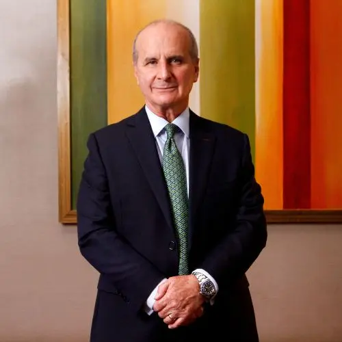

José María Figueres
José María Figueres Olsen (Catedral, San José, 24 de diciembre de 1954) es un ingeniero industrial, político y consultor internacional costarricense. Figueres fue ministro de Comercio Exterior de 1986 a 1988, ministro de Agricultura y Ganadería de 1989 a 1990 durante la administración Arias Sánchez (1986-1990) y 42.° presidente de la República de Costa Rica de 1994 a 1998.
Luego de su administración Figueres se desempeñó en distintos foros internacionales de primer nivel. Fue presidente del Partido Liberación Nacional (partido político costarricense que se sitúa entre el centro la centroizquierda y la centroderecha del espectro político), primera fuerza de oposición durante la administración Solís Rivera (2014-2018), su gestión en la presidencia del PLN dio como resultado el gane del 62% de las alcaldías en las elecciones municipales de 2016, aunque obteniendo 15000 votos menos que en las municipales de 2010 y perdiendo varias alcaldías incluyendo dos capitales de provincia.Intentó fallidamente optar por la reelección presidencial para las elecciones de 2018, pero perdió las elecciones primarias de su partido.Hijo del caudillo liberacionista José Figueres Ferrer quien lideró la fundación de la Segunda República Costarricense y la primera dama de origen estadounidense Karen Olsen Beck, pertenece al clan político Figueres de gran relevancia en la política de Costa Rica.